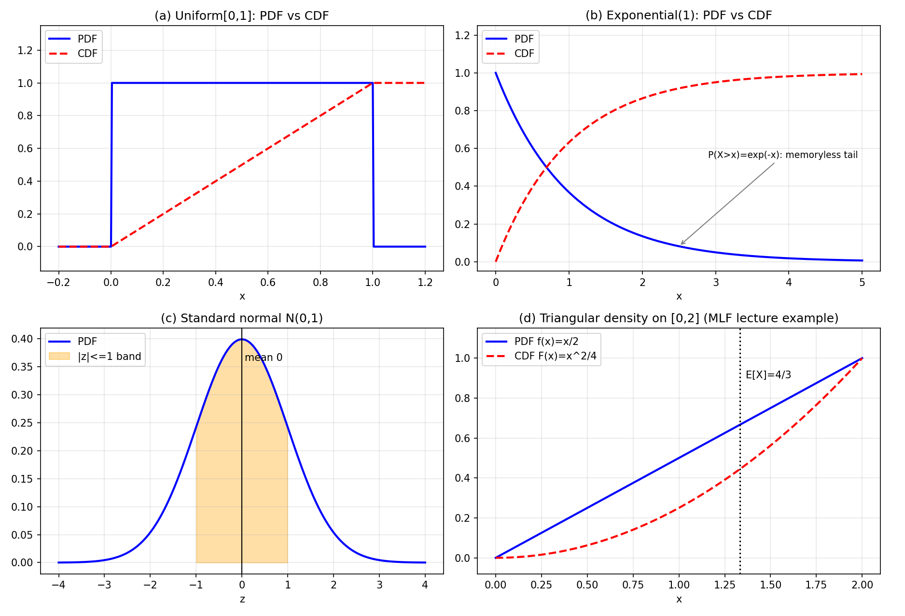

16. Continuous random variables
Chapter 15 closed with a promise (§15.17): everything built for discrete random variables lifts to the continuous case — PMF → PDF, sums → integrals, same expectation/variance definitions. This chapter is that lift.
The motivation comes from the Stats 2 lectures. Consider meteorite weights: 45000+ data points spread from \(0.01\) grams to \(60\) tons. Listing every individual value is unwieldy; instead you take logarithms, split the range into \(\approx 100\) intervals, count how many values fall in each interval, and describe the shape of the resulting histogram instead of the individual values. Or consider \(\mathrm{Binomial}(n, p)\) with \(n = 100\): the PMF formula is exact but the calculations are not pleasant. Continuous random variables are what you reach for when the values fill a continuum and counting individual outcomes stops being the right tool.
16.1 Continuous random variables
Def. A random variable is continuous if its range is a continuum — not a discrete set (§15.3).
Which ranges are continuous?
- Any interval \((a, b)\), \([a, b]\), \((a, \infty)\) with \(a < b\) is continuous.
- The whole real line \(\mathbb{R}\) is continuous.
- A range containing any interval is continuous.
The MLF lectures put it as: the range of a discrete random variable is countable; the range of a continuous random variable is not (uncountably infinite). The two definitions agree for every case in this chapter.
Note (mixed random variables). Not every random variable is discrete or continuous. The Stats 2 deck gives \(F(x) = 0\) for \(x < 0\), \(F(x) = 0.5 + 0.1x\) for \(0 \le x \le 5\), \(F(x) = 1\) for \(x > 5\): here \(P(X = 0) = 0.5\) (a genuine atom at \(0\)) while on \((0, 5]\) the probability smears out continuously — \(P(1.99 < X \le 2.01) = F(2.01) - F(1.99) = 0.002\), and \(P(1.9999999 < X \le 2.0000001) = 0.00000002\). As the precision increases, the probability decreases. This is a mixed random variable. This chapter handles the pure continuous case; the discrete case was Chapter 15.
Basically, … Discrete = the values can be listed: \(0, 1, 2, \dots\). Continuous = the values fill stretches of the number line: every real number between \(0\) and \(1\). A different toolkit is needed because there are too many values to give each one its own probability.
16.2 Why the PMF breaks: \(P(X = x) = 0\)
The MLF lecture’s example: you reach a bus stop at a random time; \(X\) = how long you wait for the bus. Ask “what is the probability you wait exactly \(4\) minutes \(29\) seconds?” The answer is \(0\) — there are so many possible wait times, why would it be exactly that one?
- For a continuous \(X\), \(P(X = x) = 0\) for every single value \(x\).
- But interval questions are meaningful: \(P(\text{wait between } 4{:}29 \text{ and } 4{:}35)\) can be small yet nonzero.
- So probability lives on intervals, not points. The PMF (§15.4), which assigns probability to individual values, cannot work — something that measures probability per unit length must take its place.
Note: \(P(X = x) = 0\) does not mean “\(x\) is impossible”. Waiting exactly \(4{:}29\) is possible — it is just one of uncountably many possibilities. Zero probability \(\ne\) impossible, for continuous random variables.
Basically, … A PMF puts lumps of probability on individual points. In the continuous world there are too many points for lumps: each point gets probability zero, and the probability lives in the stretches between points. You need a density — probability per unit of \(x\) — instead.
16.3 The PDF: probability density function
Def. The probability density function (PDF) of a continuous random variable \(X\) = the function \(f_X\) such that \[\boxed{P(X \in [x, x + dx]) \approx f_X(x)\, dx}\] for a small interval \(dx\) around \(x\). Equivalently, for any event \(A \subseteq \mathbb{R}\) (the Stats 2 deck’s formulation): \[\boxed{P(X \in A) = \int_A f_X(x)\, dx.}\]
Three properties every PDF satisfies:
- \(f_X(x) \ge 0\) for all \(x\) — it is probability divided by a positive \(dx\).
- \(\int_{-\infty}^{\infty} f_X(x)\, dx = 1\) — the discrete PMF’s “sums to \(1\)” (§15.4), with the sum replaced by an integral.
- (Stats 2 deck’s third condition) \(f_X\) is piecewise continuous.
Two things that surprise newcomers:
- \(f_X(x)\) can exceed \(1\). Only the numerator (probability) is bounded by \(1\); the denominator \(dx\) can be tiny, so the ratio — the density — can be arbitrarily large. Densities are not probabilities.
- Densities have units. Probability is unitless, but dividing by \(dx\) creates a unit: if \(X\) is a waiting time in minutes, \(f_X\) is in “per minute”; if \(X\) is a height in meters, \(f_X\) is in “per meter”. (The MLF lecture’s point: \(1/15\) per minute is the same density as \(4\) per hour.)
Def (support). The support of \(X\) = \(\mathrm{supp}(X) = \{x : f_X(x) > 0\}\) — the intervals in which \(X\) can fall with positive probability (Stats 2 deck).
eg 1 (validity check — the deck’s problem). Is \[f(x) = \begin{cases} 3x^2 & 0 < x < 1,\\ 0 & \text{otherwise} \end{cases}\] a valid density? Check the three properties: \(3x^2 \ge 0\) ✓; \(\int_{-\infty}^{\infty} f = \int_0^1 3x^2\, dx = [x^3]_0^1 = 1\) ✓; piecewise continuous ✓. Valid. Then \(P(X = 1/5) = \boxed{0}\) — every single point has probability zero (§16.2) — while for a small \(\epsilon\), \(P(X \in [1/5 - \epsilon, 1/5 + \epsilon]) \approx f(1/5)\cdot 2\epsilon = 3(1/25)\cdot 2\epsilon = 6\epsilon/25\): positive, and shrinking with \(\epsilon\).
eg 2 (finding the constant — the deck’s problem). \[f(x) = \begin{cases} k & 0 \le x < 1/4,\\ 2k & 1/4 \le x < 3/4,\\ 3k & 3/4 \le x < 1,\\ 0 & \text{otherwise}. \end{cases}\] Integrate to \(1\): \[1 = k\cdot\tfrac{1}{4} + 2k\cdot\tfrac{1}{2} + 3k\cdot\tfrac{1}{4} = \tfrac{k}{4} + k + \tfrac{3k}{4} = 2k,\] so \(\boxed{k = 1/2}\). (The area under the three rectangles must total \(1\).)
eg 3 (the bus-waiting density — MLF lecture). You arrive uniformly between \(7{:}15\) and \(7{:}30\); buses leave every \(15\) minutes. Then \(X\) = waiting time is equally likely to be any value between \(0\) and \(15\) minutes, so \(f_X(x) = C\) on \([0, 15]\), \(0\) elsewhere. Find \(C\): \[1 = \int_0^{15} C\, dx = 15C \quad\Rightarrow\quad \boxed{C = 1/15 \text{ per minute}}.\] In hours (\(0\) to \(0.25\) h): \(C = 4\) per hour — same density, different unit. The rectangle’s area is \(1\) either way.
Basically, … The PDF is the continuous version of the PMF: where the PMF says “this much probability sits at \(t\)”, the PDF says “probability is packed this densely around \(x\)”. Probabilities are areas under the PDF curve; the total area is \(1\).
16.4 The CDF for continuous random variables
Def. The cumulative distribution function (CDF) of \(X\) = \[\boxed{F_X(x) = P(X \le x) = \int_{-\infty}^{x} f_X(u)\, du, \qquad x \in \mathbb{R}.}\] Same definition as §15.5; the sum over \(t \le x\) became an integral.
- The CDF is the integral of the PDF; the PDF is the derivative of the CDF wherever the derivative exists: \(f_X(x) = F_X'(x)\) (Stats 2 deck).
- \(F_X(-\infty) = 0\), \(F_X(+\infty) = 1\); \(F_X\) is non-decreasing (MLF lecture: \(P(X \le 5) \ge P(X \le 3.6)\), always).
- Interval probabilities are differences: \(P(a < X \le b) = F_X(b) - F_X(a)\) — and since single points have probability \(0\), the endpoints never matter: \(P(a \le X \le b) = P(a < X < b) = F_X(b) - F_X(a)\).
eg 4 (linear density → quadratic CDF — MLF lecture). \(f_X(x) = x/2\) for \(0 \le x \le 2\) (\(0\) otherwise). First check validity: \(\int_0^2 (x/2)\, dx = [x^2/4]_0^2 = 1\) ✓ (a triangle of base \(2\), height \(1\)). The CDF, for \(0 \le x \le 2\): \[F_X(x) = \int_0^x \frac{u}{2}\, du = \left[\frac{u^2}{4}\right]_0^x = \boxed{\frac{x^2}{4}},\] with \(F_X(x) = 0\) for \(x < 0\) and \(F_X(x) = 1\) for \(x > 2\) (check: \(F_X(2) = 4/4 = 1\) ✓). Panel (d) of the figure draws both. Then \(P(0.5 < X \le 1.5) = F_X(1.5) - F_X(0.5) = (2.25 - 0.25)/4 = \boxed{0.5}\).
Basically, … The CDF is the running total — “how much probability has piled up so far” — and it works identically for discrete and continuous variables. The PDF is its slope: where the CDF climbs steeply, probability is dense.
16.5 Expectation
Def. The expectation of a continuous random variable \(X\) = \[\boxed{E[X] = \int_{-\infty}^{\infty} x\, f_X(x)\, dx},\] the discrete definition (§15.7) with \(\sum\) replaced by \(\int\).
The MLF lecture’s image: treat the PDF curve as a physical object whose mass at each point is proportional to the curve’s height — the point where you can balance it is \(E[X]\). Same center-of-mass idea as §15.7.
Theorem (LOTUS). For \(Y = g(X)\), \[\boxed{E[g(X)] = \int_{-\infty}^{\infty} g(x)\, f_X(x)\, dx}\] — average the transformed values with the original density, no need to find \(Y\)’s PDF first (MLF lecture’s “powerful shortcut”; Stats 2 deck states it as a theorem, “whenever the integral exists”). In particular \(E[X^2] = \int x^2 f_X(x)\, dx\).
Theorem (linearity). \(E[aX + b] = aE[X] + b\) and \(E[X + Y] = E[X] + E[Y]\) — same as §15.8, no independence needed. (The affine case is one line from the integral definition; the sum rule leans on the joint density, Chapter 17’s object, exactly as §15.8 leaned on the joint PMF.)
eg 5 (triangular density — MLF lecture). With \(f_X(x) = x/2\) on \([0, 2]\) (eg 4): \[E[X] = \int_0^2 x\cdot\frac{x}{2}\, dx = \frac{1}{2}\left[\frac{x^3}{3}\right]_0^2 = \frac{1}{2}\cdot\frac{8}{3} = \boxed{\frac{4}{3}}.\] Sanity check from the lecture: the density rises from \(0\) to \(2\), so larger values are likelier — \(E[X]\) should exceed the midpoint \(1\) but stay below the maximum \(2\). \(4/3 \approx 1.33\) ✓ (marked on panel (d) of the figure).
eg 6 (total expectation — MLF lecture). You arrive uniformly between \(7{:}10\) and \(7{:}30\); buses at \(7{:}15\) and \(7{:}30\). Let \(X\) = waiting time. Rather than finding \(X\)’s density directly, condition on \(A\) = “arrive before \(7{:}15\)”:
- Given \(A\): arrival uniform on \([7{:}10, 7{:}15]\), so waiting time uniform on \([0, 5]\): \(E[X \mid A] = 2.5\).
- Given \(A^c\): arrival uniform on \([7{:}15, 7{:}30]\), so waiting time uniform on \([0, 15]\): \(E[X \mid A^c] = 7.5\).
- \(P(A) = 5/20 = 1/4\), \(P(A^c) = 3/4\).
By the law of total expectation: \[E[X] = E[X \mid A]\,P(A) + E[X \mid A^c]\,P(A^c) = \tfrac{1}{4}(2.5) + \tfrac{3}{4}(7.5) = \boxed{6.25 \text{ minutes}}.\] Note: this is exactly the discrete law of total probability from §14.10, with expectations in place of probabilities — split the outcomes into easy groups, condition, and recombine.
Basically, … Expectation = probability-weighted average, now with an integral instead of a sum. Everything the discrete expectation could do — linearity, LOTUS, total expectation — the continuous one does too.
16.6 Variance and standard deviation
Def. The variance of \(X\) = \[\boxed{\mathrm{Var}(X) = E\big[(X - E[X])^2\big]},\] and \(\sigma = \sqrt{\mathrm{Var}(X)}\) is the standard deviation — identical to §15.9.
Theorem. \(\boxed{\mathrm{Var}(X) = E[X^2] - (E[X])^2}\) (same one-line expansion as §15.9, using linearity).
Corollary. \(\mathrm{Var}(aX + b) = a^2\,\mathrm{Var}(X)\) (MLF lecture). Note: unlike expectation, variance is not linear: \(\mathrm{Var}(X + Y) \ne \mathrm{Var}(X) + \mathrm{Var}(Y)\) in general — the lecture’s counterexample: \(Y = -X\) gives \(\mathrm{Var}(X + Y) = 0\) while \(\mathrm{Var}(X) + \mathrm{Var}(Y) > 0\). (The sum-of-independent case, where it does add, is Chapter 17’s.)
eg 7 (uniform variance — MLF lecture). Let \(X \sim \mathrm{Uniform}[a, b]\) (PDF \(1/(b-a)\) on \([a,b]\); §16.7). Using LOTUS: \[E[X^2] = \int_a^b x^2 \frac{1}{b-a}\, dx = \frac{1}{b-a}\left[\frac{x^3}{3}\right]_a^b = \frac{b^3 - a^3}{3(b-a)} = \frac{a^2 + ab + b^2}{3}.\] With \(E[X] = (a+b)/2\) (eg 5’s method, or §16.7): \[\mathrm{Var}(X) = \frac{a^2 + ab + b^2}{3} - \frac{(a+b)^2}{4} = \boxed{\frac{(b-a)^2}{12}}.\] When \(b = a\), the variance is \(0\): \(X\) is always \(a\), a constant — the only random variables with zero variance (MLF lecture).
Basically, … Variance = “average of the squares minus the square of the average” — the same formula as the discrete case, computed with integrals. Spread, not location.
16.7 The uniform distribution
Def. \(X \sim \mathrm{Uniform}[a, b]\) (\(a < b\)): \[\boxed{f_X(x) = \begin{cases} \dfrac{1}{b-a} & a \le x \le b,\\[4pt] 0 & \text{otherwise}, \end{cases}} \qquad F_X(x) = \begin{cases} 0 & x \le a,\\ \dfrac{x-a}{b-a} & a < x < b,\\ 1 & x \ge b. \end{cases}\]
The continuous version of §15.10’s discrete uniform: “equally likely” now means equal-length intervals get equal probability. Mean and variance (eg 7 and the calculation in §16.5): \[\boxed{E[X] = \frac{a+b}{2}, \qquad \mathrm{Var}(X) = \frac{(b-a)^2}{12}.}\]
eg 8 (the deck’s problem). \(X \sim \mathrm{Uniform}[-10, 10]\), so \(f_X(x) = 1/20\) on \([-10, 10]\):
- \(P(-3 \le X \le 2) = \dfrac{2 - (-3)}{20} = \boxed{\dfrac{1}{4}}\) — interval length over total length.
- \(P(5 < |X| < 7)\): \(|X| \in (5, 7)\) means \(X \in (-7, -5) \cup (5, 7)\), total length \(4\): \(4/20 = \boxed{1/5}\).
- \(P(X > 7 \mid X > 3) = \dfrac{P(X > 7)}{P(X > 3)} = \dfrac{(10-7)/20}{(10-3)/20} = \boxed{\dfrac{3}{7}}\).
Basically, … Continuous uniform = “pick a point at random in \([a,b]\)”. Every probability is a length ratio: favorable length divided by \(b - a\). The mean is the midpoint; the spread grows with \((b-a)^2\).
16.8 The exponential distribution
Def. \(X \sim \mathrm{Exponential}(\lambda)\), \(\lambda > 0\): \[\boxed{f_X(x) = \begin{cases} \lambda e^{-\lambda x} & x \ge 0,\\ 0 & x < 0. \end{cases}}\]
The continuous analogue of the geometric (§15.13): where the geometric models number of trials until success, the exponential models time until an event — the MLF lecture’s example is a bulb’s running time, \(\lambda = 0.5\) per year. (Geometric: tries; exponential: time. Same shape of idea.)
Validity check (MLF lecture): \(\int_0^{\infty} \lambda e^{-\lambda x}\, dx = \left[-e^{-\lambda x}\right]_0^{\infty} = 1\) ✓.
The CDF, for \(x > 0\): \[\boxed{F_X(x) = \int_0^x \lambda e^{-\lambda u}\, du = 1 - e^{-\lambda x}}\] (\(0\) for \(x \le 0\)), so the tail is clean: \(P(X > x) = e^{-\lambda x}\).
Mean and variance. \(E[X] = \int_0^{\infty} x\,\lambda e^{-\lambda x}\, dx\). Integration by parts (\(u = x\), \(dv = e^{-\lambda x}dx\); MLF lecture’s derivation): \[= \lambda\left(\left[-\frac{x}{\lambda}e^{-\lambda x}\right]_0^{\infty} + \int_0^{\infty}\frac{1}{\lambda}e^{-\lambda x}\, dx\right) = 0 + \int_0^{\infty} e^{-\lambda x}\, dx = \boxed{\frac{1}{\lambda}}.\] (The boundary term vanishes: \(e^{-\lambda x}\) beats \(x\) to zero.) The lecture’s reading: small \(\lambda\) (rare failures) → large expected lifetime; \(\lambda = 0.5\)/year → \(E[X] = 2\) years. A second round of parts gives \(E[X^2] = 2/\lambda^2\), hence (Stats 2 deck’s table): \[\boxed{E[X] = \frac{1}{\lambda}, \qquad \mathrm{Var}(X) = \frac{1}{\lambda^2}.}\] Note: \(\lambda\)’s unit is “per unit time” — \(E[X] = 1/\lambda\) then comes out in units of time, as it must.
Theorem (memorylessness). For \(a > b \ge 0\): \[\boxed{P(X > a \mid X > b) = P(X > a - b).}\] Proof (MLF lecture): the left side is \(\dfrac{P(X > a)}{P(X > b)} = \dfrac{e^{-\lambda a}}{e^{-\lambda b}} = e^{-\lambda(a-b)} = P(X > a-b)\). ∎ A bulb that has survived \(1\) year is, probabilistically, a brand-new bulb — the past is forgotten. The exponential is the only continuous distribution with this property (just as the geometric is the only discrete one, §15.13).
Note (minimum of exponentials — MLF lecture). If \(X \sim \mathrm{Exponential}(\lambda)\), \(Y \sim \mathrm{Exponential}(\tau)\) are independent, then \(Z = \min(X, Y) \sim \mathrm{Exponential}(\lambda + \tau)\): \(P(Z > z) = P(X > z)P(Y > z) = e^{-\lambda z}e^{-\tau z} = e^{-(\lambda+\tau)z}\). The lecture’s reading: a laptop whose CPU fails at rate \(0.25\)/year and RAM at \(0.25\)/year fails (first component down = laptop down) at rate \(0.5\)/year — expected laptop life \(2\) years, not \(4\).
eg 9 (the deck’s problem). \(X \sim \mathrm{Exponential}(2)\):
- \(P(5 < X < 7) = F_X(7) - F_X(5) = (1 - e^{-14}) - (1 - e^{-10}) = e^{-10} - e^{-14} \approx \boxed{4.5 \times 10^{-5}}\).
- \(P(X > 7 \mid X > 3) = P(X > 4)\) by memorylessness \(= e^{-2\cdot 4} = e^{-8} \approx \boxed{3.35 \times 10^{-4}}\) — no need to touch the joint event.
Basically, … Exponential = “waiting time for the next event, when events strike at a steady rate \(\lambda\) with no memory”. Mean \(1/\lambda\), tail \(e^{-\lambda x}\), and the past never matters — surviving \(b\) more years after surviving \(b\) is exactly as likely as surviving \(b\) fresh.
16.9 The normal distribution
Def. \(Z \sim \mathrm{Normal}(0, 1)\) (standard normal): \[\boxed{f_Z(z) = \frac{1}{\sqrt{2\pi}}\, e^{-z^2/2}, \qquad z \in \mathbb{R}.}\]
Is this a valid density? The constant \(1/\sqrt{2\pi}\) must make the integral \(1\) — i.e. \(\int_{-\infty}^{\infty} e^{-z^2/2}\, dz\) must equal \(\sqrt{2\pi}\). This integral has no elementary antiderivative, but the MLF lecture’s polar-coordinates trick evaluates it: with \(A = \int_{-\infty}^{\infty} e^{-x^2/2}\, dx\), \[A^2 = \iint_{\mathbb{R}^2} e^{-(x^2+y^2)/2}\, dx\, dy \stackrel{x = r\cos\theta,\, y = r\sin\theta}{=} \int_0^{2\pi}\!\!\int_0^{\infty} e^{-r^2/2}\, r\, dr\, d\theta.\] With \(u = r^2/2\) (\(du = r\, dr\)), the inner integral is \(\int_0^{\infty} e^{-u}\, du = 1\); the outer is \(2\pi\). So \(A^2 = 2\pi\), \(A = \sqrt{2\pi}\) ✓. (The \(r\, dr\) from \(dx\, dy = r\, dr\, d\theta\) is what makes the integral solvable.)
Def (general normal). Put \(X = \sigma Z + \mu\) with \(Z \sim \mathrm{Normal}(0, 1)\), \(\sigma > 0\). By the change-of-variables rule (\(z = (x-\mu)/\sigma\), Jacobian factor \(1/\sigma\); MLF lecture): \[\boxed{f_X(x) = \frac{1}{\sigma\sqrt{2\pi}}\, \exp\!\left(-\frac{(x-\mu)^2}{2\sigma^2}\right)}, \qquad X \sim \mathrm{Normal}(\mu, \sigma^2).\]
Then, by linearity (§16.5) and the variance corollary (§16.6) — no integration needed: \[E[X] = \sigma E[Z] + \mu = \mu, \qquad \mathrm{Var}(X) = \sigma^2 \mathrm{Var}(Z) = \sigma^2,\] since \(Z\) is symmetric about \(0\) (\(E[Z] = 0\)) and \(\mathrm{Var}(Z) = 1\). So \(\mu\) is the mean parameter, \(\sigma^2\) the variance parameter — the parameters are the mean and variance.
Standardization. If \(X \sim \mathrm{Normal}(\mu, \sigma^2)\), then \[\boxed{Z = \frac{X - \mu}{\sigma} \sim \mathrm{Normal}(0, 1)}\] (Stats 2 deck). The normal CDF has no closed form, so probabilities are computed by standardizing and looking up \(\Phi(z) = P(Z \le z)\) in a normal table (or a computing system — Stats 2 deck).
Note (why the normal is everywhere). The MLF lecture’s answer: the central limit theorem (Chapter 21) — whenever many small independent effects add up, the total is approximately normal. Measurement noise, e.g. an ammeter’s reading with no voltage applied, is the textbook example. “Gaussian” = normal, same distribution.
eg 10. \(X \sim \mathrm{Normal}(2, 5)\) (so \(\sigma = \sqrt{5} \approx 2.236\)). Standardize:
- \(P(X < 5) = P\!\left(Z < \tfrac{5-2}{\sqrt{5}}\right) = \Phi(1.3416) \approx \boxed{0.9101}\).
- \(P(X > 10) = 1 - \Phi\!\left(\tfrac{10-2}{\sqrt{5}}\right) = 1 - \Phi(3.5777) \approx \boxed{1.7 \times 10^{-4}}\).
eg 11. \(X \sim \mathrm{Normal}(3, 1)\):
- \(P(5 < X < 7) = \Phi(4) - \Phi(2) \approx 0.99997 - 0.97725 = \boxed{0.0227}\).
- \(P(X > 7 \mid X > 3) = \dfrac{P(X > 7)}{P(X > 3)} = \dfrac{1 - \Phi(4)}{1 - \Phi(0)} \approx \dfrac{0.0000317}{0.5} = \boxed{6.3 \times 10^{-5}}\). No memorylessness here — the normal remembers; the ratio must be computed directly (contrast eg 9(ii)).
Basically, … Normal = the bell curve. Two parameters that are the mean and variance. To compute any probability: subtract the mean, divide by the standard deviation, look up the standard-normal table. And it shows up everywhere because sums of many small effects are approximately normal (Chapter 21 makes this precise).
16.10 Functions of a continuous random variable
If \(X\) has CDF \(F_X\) and \(Y = g(X)\), the CDF method (Stats 2 deck): \[\boxed{F_Y(y) = P(Y \le y) = P(g(X) \le y) = P\big(X \in \{x : g(x) \le y\}\big)},\] then \(f_Y = F_Y'\) — the continuous twin of §15.6’s “pool the probabilities” rule, now via calculus.
eg 12 (the deck’s example). \(X \sim \mathrm{Uniform}[0, 1]\), \(Y = 2X\). For \(0 \le y \le 2\): \[F_Y(y) = P(2X \le y) = P\!\left(X \le \tfrac{y}{2}\right) = \int_0^{y/2} 1\, dx = \frac{y}{2},\] so \(f_Y(y) = F_Y'(y) = 1/2\) on \([0, 2]\): \(Y \sim \mathrm{Uniform}[0, 2]\). (Scaling stretches the interval and thins the density so the area stays \(1\).)
For a strictly monotone \(g\) there is a direct formula: with \(x = g^{-1}(y)\), \[\boxed{f_Y(y) = f_X\!\left(g^{-1}(y)\right)\,\left|\frac{d}{dy}g^{-1}(y)\right|}\] on \(Y\)’s range. This is what §16.9 used: \(x = \sigma z + \mu\) has inverse \(z = (x-\mu)/\sigma\) with derivative \(1/\sigma\), giving the general normal PDF from the standard one.
Basically, … \(g(X)\) inherits its distribution from \(X\)’s: the CDF method (\(F_Y\) first, differentiate) always works; for monotone \(g\) the Jacobian formula does it in one step. And LOTUS (§16.5) means you usually need \(g(X)\)’s expectation, not its whole distribution.

16.11 Why this matters: the same language, a bigger world
- The lift is complete. PMF → PDF (§16.3), CDF the same definition (§16.4), sums → integrals (§§16.5–16.6), and the three workhorse distributions — uniform, exponential, normal — each the continuous sibling of a discrete one (§§15.10, 15.13, and the normal’s own story). §15.17’s promise, delivered.
- These are the ML distributions. Uniform: random initialization ranges. Exponential: waiting times, survival/failure modeling. Normal: measurement noise, weight priors, the limiting shape of averaged quantities (Chapter 21). You will meet all three constantly from here on.
- What comes next. Chapters 17–18 put two random variables together (joint densities — the object the linearity proof already leaned on); Chapter 19 builds the multivariate normal; Chapter 20 estimates parameters (MLE) of exactly these distributions; Chapter 21’s central limit theorem explains why the normal keeps appearing.
Problem set
- (PDF validity) \(f(x) = 3x^2\) for \(0 < x < 1\) (\(0\) otherwise). (a) Show \(f\) is a valid density. (b) Find \(P(X = 1/5)\) and \(P(X \in [1/5 - \epsilon, 1/5 + \epsilon])\) for small \(\epsilon > 0\).
- (Finding the constant) \(f(x) = k\) on \([0, 1/4)\), \(2k\) on \([1/4, 3/4)\), \(3k\) on \([3/4, 1)\) (\(0\) otherwise). Find \(k\); then find \(P(X \le 1/2)\).
- (CDF from PDF) \(f_X(x) = x/2\) for \(0 \le x \le 2\) (\(0\) otherwise). (a) Write \(F_X(x)\) piecewise. (b) Find \(P(0.5 < X \le 1.5)\).
- (Uniform) \(X \sim \mathrm{Uniform}[-10, 10]\). Find \(P(-3 \le X \le 2)\), \(P(5 < |X| < 7)\), and \(P(X > 7 \mid X > 3)\).
- (Expectation and variance) \(f_X(x) = 2x\) for \(0 < x < 1\) (\(0\) otherwise). Find \(E[X]\) and \(\mathrm{Var}(X)\).
- (Exponential probabilities) \(X \sim \mathrm{Exponential}(2)\). Find \(P(5 < X < 7)\) and \(P(X > 7 \mid X > 3)\).
- (Exponential mean) A bulb’s lifetime \(X\) is \(\mathrm{Exponential}(\lambda)\) with \(\lambda = 0.5\) per year. Find \(E[X]\) and \(P(X > 2)\).
- (Memorylessness) \(X \sim \mathrm{Exponential}(0.3)\): a component’s lifetime in years. Given it has survived \(4\) years, find \(P(X > 10 \mid X > 4)\).
- (Normal) \(X \sim \mathrm{Normal}(3, 1)\). Find \(P(5 < X < 7)\) and \(P(X > 7 \mid X > 3)\). (Use a standard-normal table.)
- (Minimum of exponentials) A laptop’s CPU and RAM have independent failure times \(X, Y \sim \mathrm{Exponential}(0.25)\) per year; the laptop fails when the first component fails, \(Z = \min(X, Y)\). Find the distribution of \(Z\) and \(P(Z \le 1)\).
Solutions
Attempt each problem first, then click a problem to reveal its worked solution.
1. (PDF validity) (a) \(f(x) = 3x^2 \ge 0\) on \((0,1)\); \(\int_{-\infty}^{\infty} f(x)\,dx = \int_0^1 3x^2\,dx = [x^3]_0^1 = 1\); piecewise continuous. All three density properties (§16.3) hold, so \(f\) is valid.
- \(P(X = 1/5) = \boxed{0}\) — every single point has probability zero for a continuous random variable (§16.2). For the interval, \[P(X \in [1/5 - \epsilon, 1/5 + \epsilon]) = \int_{1/5-\epsilon}^{1/5+\epsilon} 3x^2\,dx = \left[x^3\right]_{1/5-\epsilon}^{1/5+\epsilon} = \boxed{(1/5+\epsilon)^3 - (1/5-\epsilon)^3} \approx \frac{6\epsilon}{25}\] for small \(\epsilon\) (using \(P \approx f(1/5)\cdot 2\epsilon\)). Positive, but shrinking to \(0\) with \(\epsilon\) — precision costs probability.
2. (Finding the constant) Integrate to \(1\): \[1 = k\cdot\frac{1}{4} + 2k\cdot\frac{1}{2} + 3k\cdot\frac{1}{4} = \frac{k}{4} + k + \frac{3k}{4} = 2k,\] so \(\boxed{k = 1/2}\). Then \[P(X \le 1/2) = \int_0^{1/4}\tfrac{1}{2}\,dx + \int_{1/4}^{1/2} 1\,dx = \tfrac{1}{2}\cdot\tfrac{1}{4} + 1\cdot\tfrac{1}{4} = \frac{1}{8} + \frac{1}{4} = \boxed{\frac{3}{8}}.\]
3. (CDF from PDF) (a) For \(0 \le x \le 2\): \(F_X(x) = \int_0^x (u/2)\,du = x^2/4\). So \[F_X(x) = \begin{cases} 0 & x < 0,\\ x^2/4 & 0 \le x \le 2,\\ 1 & x > 2. \end{cases}\] Check: \(F_X(2) = 1\) ✓, and \(F_X' = x/2 = f_X\) on \((0,2)\) ✓.
- \(P(0.5 < X \le 1.5) = F_X(1.5) - F_X(0.5) = \dfrac{2.25}{4} - \dfrac{0.25}{4} = \boxed{0.5}\).
4. (Uniform) \(f_X(x) = 1/20\) on \([-10, 10]\) (§16.7).
\(P(-3 \le X \le 2) = \dfrac{2-(-3)}{20} = \boxed{1/4}\) (length ratio).
\(P(5 < |X| < 7)\): \(|X| \in (5,7)\) iff \(X \in (-7,-5)\cup(5,7)\), total length \(2+2=4\): \(4/20 = \boxed{1/5}\).
\(P(X > 7 \mid X > 3) = \dfrac{P(X > 7)}{P(X > 3)} = \dfrac{(10-7)/20}{(10-3)/20} = \boxed{3/7}\).
5. (Expectation and variance) \(E[X] = \int_0^1 x\cdot 2x\,dx = \int_0^1 2x^2\,dx = \left[\tfrac{2x^3}{3}\right]_0^1 = \boxed{2/3}\).
\(E[X^2] = \int_0^1 x^2\cdot 2x\,dx = \int_0^1 2x^3\,dx = \left[\tfrac{x^4}{2}\right]_0^1 = 1/2\).
\(\mathrm{Var}(X) = E[X^2] - (E[X])^2 = \tfrac{1}{2} - \tfrac{4}{9} = \tfrac{9-8}{18} = \boxed{1/18}\), \(\sigma = 1/\sqrt{18} \approx 0.236\).
6. (Exponential probabilities) \(F_X(x) = 1 - e^{-2x}\) for \(x > 0\) (§16.8).
\(P(5 < X < 7) = F_X(7) - F_X(5) = (1 - e^{-14}) - (1 - e^{-10}) = e^{-10} - e^{-14} \approx \boxed{4.5\times 10^{-5}}\).
\(P(X > 7 \mid X > 3) = P(X > 7-3) = P(X > 4)\) by memorylessness \(= e^{-2\cdot 4} = e^{-8} \approx \boxed{3.35\times 10^{-4}}\).
7. (Exponential mean) \(E[X] = 1/\lambda = 1/0.5 = \boxed{2\text{ years}}\) (§16.8). \(P(X > 2) = e^{-\lambda\cdot 2} = e^{-1} \approx \boxed{0.3679}\) — about a \(37\%\) chance the bulb outlives its own mean lifetime (the exponential’s right skew at work).
8. (Memorylessness) \(P(X > 10 \mid X > 4) = P(X > 10-4) = P(X > 6) = e^{-0.3\cdot 6} = e^{-1.8} \approx \boxed{0.1653}\) (§16.8). The \(4\) survived years are forgotten — same answer as for a brand-new component asked to survive \(6\) years. (Compare §15’s Problem 8: the geometric version.)
9. (Normal) Standardize with \(Z = (X-3)/1 = X-3\).
\(P(5 < X < 7) = P(2 < Z < 4) = \Phi(4) - \Phi(2) \approx 0.99997 - 0.97725 = \boxed{0.0227}\).
\(P(X > 7 \mid X > 3) = \dfrac{P(X > 7)}{P(X > 3)} = \dfrac{1-\Phi(4)}{1-\Phi(0)} \approx \dfrac{0.0000317}{0.5} = \boxed{6.3\times 10^{-5}}\). (The normal has no memorylessness — the ratio must be computed directly; contrast Problem 8.)
10. (Minimum of exponentials) \(P(Z > z) = P(X > z)P(Y > z) = e^{-0.25z}e^{-0.25z} = e^{-0.5z}\) for \(z \ge 0\) (§16.8, Note). So \(\boxed{Z \sim \mathrm{Exponential}(0.5)}\) per year — the laptop fails twice as fast as either part alone, with \(E[Z] = 2\) years.
\(P(Z \le 1) = 1 - e^{-0.5} \approx \boxed{0.3935}\) — about a \(39\%\) chance the laptop dies within its first year.